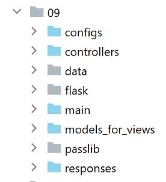

34. Ejercicio práctico: versión 14

El archivo [http-servers/09] de la versión 14 se obtiene al copiar el archivo [http-servers/08] de la versión 13.
34.1. Introducción
CSRF (Cross Site Request Forgery) es una técnica de robo de sesión. Se explica así en Wikipedia (https://fr.wikipedia.org/wiki/Cross-site_request_forgery):
- Malorie logra averiguar el enlace que permite eliminar el mensaje en cuestión.
- Malorie le envía un mensaje a Alice con una pseudoimagen para que la vea (que en realidad es un script). El URL de la imagen es el enlace al script que permite eliminar el mensaje deseado.
- Alice debe tener una sesión abierta en su navegador para el sitio web al que apunta Malorie. Esta es una condición necesaria para que el ataque se realice de manera silenciosa, sin requerir una solicitud de autenticación que alertara a Alice. Dicha sesión debe contar con los permisos necesarios para ejecutar la solicitud destructiva de Malorie. No es necesario que haya una pestaña del navegador abierta en el sitio de destino, ni siquiera que el navegador esté iniciado. Basta con que la sesión esté activa.
- Alice lee el mensaje de Malorie; su navegador utiliza la sesión abierta de Alice y no solicita autenticación interactiva. Intenta recuperar el contenido de la imagen. Al hacerlo, el navegador activa el enlace y elimina el mensaje; recupera una página web de texto como contenido de la imagen. Al no reconocer el tipo de imagen asociado, no muestra ninguna imagen y Alice no se da cuenta de que Malorie acaba de hacer que borre un mensaje sin su consentimiento.
Incluso explicada así, la técnica de CSRF es difícil de entender. Hagamos un esquema:

- en [1-2], Alice se conecta al foro (Sitio A). Este foro mantiene una sesión para cada usuario. El navegador de Alice almacena localmente esta cookie de sesión y la reenvía cada vez que realiza una nueva solicitud al sitio A;
- en [3], Malorie le envía un mensaje a Alice. Ella lo lee con su navegador. El mensaje leído tiene el formato HTML y contiene un enlace a una imagen del sitio B. De hecho, este enlace es un enlace a un script de JavaScript que se ejecuta una vez que llega al navegador de Alice;
- este script de JavaScript realiza entonces una solicitud al sitio A. El navegador de Alice envía automáticamente la solicitud con la cookie de sesión almacenada localmente. Aquí es donde ocurre el ataque: Malorie logró consultar el sitio A con los derechos (sesión) de Alice. A partir de ahí, pase lo que pase, el ataque ya se ha llevado a cabo;
Para contrarrestar este tipo de ataque, el sitio A puede proceder de la siguiente manera:
- en cada intercambio [1-2] con Alice, el sitio A envía una clave, denominada en adelante token (ficha) CSRF, que Alice debe devolverle en la siguiente solicitud. De este modo, Alice debe enviar en cada solicitud dos datos:
- la cookie de sesión;
- el token CSRF recibido en la respuesta a su última solicitud al sitio A;
Ahí radica la protección: si bien el navegador reenvía automáticamente al sitio A la cookie de sesión, no hace lo mismo con el token CSRF. Por esta razón, el intercambio 6-7 realizado por el script de ataque será rechazado, ya que la solicitud 6 no habrá enviado el token CSRF;
El sitio A puede enviarle a Alice el token CSRF de diversas maneras para una aplicación HTML:
- puede enviar, en cada solicitud, una página HTML en la que todos los enlaces tengan el token CSRF, por ejemplo, [http://siteA/chemin/csrf_token]. En la siguiente solicitud, cuando Alicia haga clic en uno de estos enlaces, el sitio A solo tendrá que recuperar el token CSRF del URL de la solicitud y verificar que sea correcto. Eso es lo que se hará aquí;
- en el caso de las páginas HTML que contengan un formulario, puede enviar este último con un campo oculto [input type=’hidden’] que contenga el token CSRF. Este se enviará automáticamente junto con el formulario cuando Alice valide la página. El sitio A recuperará el token CSRF en el cuerpo (body) de la solicitud;
- se pueden considerar otras técnicas;
34.2. Configuración

Introducimos en la configuración [parameters] de la aplicación dos valores booleanos:
- [with_redissession]: si es True, la aplicación utiliza una sesión de Redis. Si es False, la aplicación utiliza una sesión normal de Flask;
- [with_csrftoken]: si es True, los URL de la aplicación contienen un token CSRF;
# tiempo de pausa del hilo en segundos
"sleep_time": 0,
# servidor Redis
"with_redissession": True,
"redis": {
"host": "127.0.0.1",
"port": 6379
},
# token CSRF
"with_csrftoken": False,
34.3. Implementación CSRF
Nos aseguraremos de que cuando:
config['parameters']['with_csrftoken']
sea igual a [True], la aplicación envíe al navegador del cliente páginas web cuyos enlaces contengan un token CSRF.
34.3.1. El módulo [flask_wtf]
La implementación del token CSRF se realizará con el módulo [flask_wtf], que instalaremos en un terminal PyCharm:
(venv) C:\Data\st-2020\dev\python\cours-2020\python3-flask-2020\packages>pip install flask_wtf
Collecting flask_wtf
…
34.3.2. Las plantillas de las vistas
Introducimos una nueva clase en las plantillas:

La clase [AbstractBaseModelForView] es la siguiente:
from abc import abstractmethod
from flask import Request
from flask_wtf.csrf import generate_csrf
from werkzeug.local import LocalProxy
from InterfaceModelForView import InterfaceModelForView
class AbstractBaseModelForView(InterfaceModelForView):
@abstractmethod
def get_model_for_view(self, request: Request, session: LocalProxy, config: dict, résultat: dict) -> dict:
pass
def get_csrftoken(self, config: dict):
# csrf_token
if config['parameters']['with_csrftoken']:
return f"/{generate_csrf()}"
else:
return ""
- línea 9: la clase [AbstractBaseModelForView] implementa la interfaz [InterfaceModelForView], que a su vez es implementada por las clases de los modelos;
- líneas 11-13: el método [get_model_for_view] no está implementado;
- líneas 15-20: el método [get_csrftoken] genera el token CSRF si la aplicación ha sido configurada para utilizarlos. Dependiendo del caso, la función devuelve un token precedido por el signo /; de lo contrario, devuelve una cadena vacía. La función [generate_csrf] tiene la particularidad de generar siempre el mismo valor para una solicitud de cliente determinada. El procesamiento de una solicitud implica la ejecución de diferentes funciones. El uso de [generate_csrf] en estas funciones siempre genera el mismo valor. En la siguiente solicitud, en cambio, se genera un nuevo token CSRF;
Todas las plantillas M de la vista V incluirán el token CSRF de la siguiente manera:
class ModelForAuthentificationView(AbstractBaseModelForView):
def get_model_for_view(self, request: Request, session: LocalProxy, config: dict, résultat: dict) -> dict:
# encapsulamos los datos de la página en una plantilla
modèle = {}
…
# token CSRF
modèle['csrf_token'] = super().get_csrftoken(config)
# se devuelve la plantilla
return modèle
- cada clase de modelo extiende la clase base [AbstractBaseModelForView];
- línea 8: se solicita el token CSRF a la clase padre. Se obtiene ya sea la cadena vacía o una cadena del tipo [/Ijk4NjQ2ZDdjZjI0ZDJiYTVjZTZjYmFhZGNjMjE3Y2U5M2I3ODI0NzYi.Xy5Okg.n-kSR_nslkndfT7AFVy2UDtdb8c];
34.3.3. Las vistas
Por lo que acabamos de ver, todas las vistas V tendrán en su modelo M el token CSRF. Por lo tanto, podrán utilizarlo en los enlaces que contengan. Veamos algunos ejemplos:
El fragmento de autenticación [v_authentification.html]
<!-- formulario HTML: se envían sus valores mediante la acción [authentifier-utilisateur] -->
<form method="post" action="/authentifier-utilisateur{{modèle.csrf_token}}">
<!-- título -->
<div class="alert alert-primary" role="alert">
<h4>Veuillez vous authentifier</h4>
</div>
…
</form>
- línea 2: según lo que acabamos de ver, el URL del atributo [action] será:
[/authentifier-utilisateur/Ijk4NjQ2ZDdjZjI0ZDJiYTVjZTZjYmFhZGNjMjE3Y2U5M2I3ODI0NzYi.Xy5Okg.n-kSR_nslkndfT7AFVy2UDtdb8c]
o
dependiendo de si la aplicación se ha configurado para utilizar o no tokens CSRF;
El fragmento de cálculo del impuesto [v-calcul-impot.html]
<!-- formulario HTML enviado -->
<form method="post" action="/calculer-impot{{modèle.csrf_token}}">
<!-- mensaje en 12 columnas sobre fondo azul -->
<div class="col-md-12">
<div class="alert alert-primary" role="alert">
<h4>Remplissez le formulaire ci-dessous puis validez-le</h4>
</div>
</div>
…
</form>
El fragmento de simulaciones [v-liste-simulations.html]
{% if modèle.simulations is undefined or modèle.simulations|length==0 %}
<!-- mensaje sobre fondo azul -->
<div class="alert alert-primary" role="alert">
<h4>Votre liste de simulations est vide</h4>
</div>
{% endif %}
{% if modèle.simulations is defined and modèle.simulations|length!=0 %}
<!-- mensaje sobre fondo azul -->
<div class="alert alert-primary" role="alert">
<h4>Liste de vos simulations</h4>
</div>
<!-- tabla de simulaciones -->
<table class="table table-sm table-hover table-striped">
…
<!-- cuerpo de la tabla (datos mostrados) -->
<tbody>
<!-- se muestra cada simulación al recorrer la tabla de simulaciones -->
{% for simulation in modèle.simulations %}
<!-- visualización de una fila de la tabla con 6 columnas - etiqueta <tr> -->
<!-- columna 1: encabezado de fila (n.º de simulación) — etiqueta <th scope='row' -->
<!-- columna 2: valor del parámetro [marié] - etiqueta <td> -->
<!-- columna 3: valor del parámetro [enfants] - etiqueta <td> -->
<!-- columna 4: valor del parámetro [salaire] - etiqueta <td> -->
<!-- columna 5: valor del parámetro [impôt] (del impuesto) - etiqueta <td> -->
<!-- columna 6: valor del parámetro [surcôte] - etiqueta <td> -->
<!-- columna 7: valor del parámetro [décôte] - etiqueta <td> -->
<!-- columna 8: valor del parámetro [réduction] - etiqueta <td> -->
<!-- columna 9: valor del parámetro [taux] (del impuesto) - etiqueta <td> -->
<!-- columna 10: enlace para eliminar la simulación - etiqueta <td> -->
<tr>
<th scope="row">{{simulation.id}}</th>
<td>{{simulation.marié}}</td>
<td>{{simulation.enfants}}</td>
<td>{{simulation.salaire}}</td>
<td>{{simulation.impôt}}</td>
<td>{{simulation.surcôte}}</td>
<td>{{simulation.décôte}}</td>
<td>{{simulation.réduction}}</td>
<td>{{simulation.taux}}</td>
<td><a href="/supprimer-simulation/{{simulation.id}}{{modèle.csrf_token}}">Supprimer</a></td>
</tr>
{% endfor %}
</tr>
</tbody>
</table>
{% endif %}
El fragmento del menú [v-menu.html]
<!-- menú Bootstrap -->
<nav class="nav flex-column">
<!-- visualización de una lista de enlaces HTML -->
{% for optionMenu in modèle.optionsMenu %}
<a class="nav-link" href="{{optionMenu.url}}{{modèle.csrf_token}}">{{optionMenu.text}}</a>
{% endfor %}
</nav>
34.3.4. Las rutas
Ahora hay dos tipos de rutas, dependiendo de si utilizan o no un token CSRF:

- [routes_without_csrftoken] son las rutas sin token CSRF. Estas son las rutas de la versión anterior;
- [routes_with_csrftoken] son las rutas con el token CSRF.
En [routes_with_csrftoken], las rutas ahora tienen un parámetro adicional, el token CSRF:
# el controlador frontal
def front_controller() -> tuple:
# se reenvía la solicitud al controlador principal
main_controller = config['mvc']['controllers']['main-controller']
return main_controller.execute(request, session, config)
@app.route('/', methods=['GET'])
def index() -> tuple:
# redirección a /init-session/html
return redirect(url_for("init_session", type_response="html", csrf_token=generate_csrf()), status.HTTP_302_FOUND)
# init-session
@app.route('/init-session/<string:type_response>/<string:csrf_token>', methods=['GET'])
def init_session(type_response: str, csrf_token: str) -> tuple:
# se ejecuta el controlador asociado a la acción
return front_controller()
# autenticar-usuario
@app.route('/authentifier-utilisateur/<string:csrf_token>', methods=['POST'])
def authentifier_utilisateur(csrf_token: str) -> tuple:
# se ejecuta el controlador asociado a la acción
return front_controller()
# calcular-impuesto
@app.route('/calculer-impot/<string:csrf_token>', methods=['POST'])
def calculer_impot(csrf_token: str) -> tuple:
# se ejecuta el controlador asociado a la acción
return front_controller()
# cálculo del impuesto por lotes
@app.route('/calculer-impots/<string:csrf_token>', methods=['POST'])
def calculer_impots(csrf_token: str):
# se ejecuta el controlador asociado a la acción
return front_controller()
# listar simulaciones
@app.route('/lister-simulations/<string:csrf_token>', methods=['GET'])
def lister_simulations(csrf_token: str) -> tuple:
# se ejecuta el controlador asociado a la acción
return front_controller()
# eliminar-simulación
@app.route('/supprimer-simulation/<int:numero>/<string:csrf_token>', methods=['GET'])
def supprimer_simulation(numero: int, csrf_token: str) -> tuple:
# se ejecuta el controlador asociado a la acción
return front_controller()
# fin-sesión
@app.route('/fin-session/<string:csrf_token>', methods=['GET'])
def fin_session(csrf_token: str) -> tuple:
# se ejecuta el controlador asociado a la acción
return front_controller()
# mostrar-cálculo-impuestos
@app.route('/afficher-calcul-impot/<string:csrf_token>', methods=['GET'])
def afficher_calcul_impot(csrf_token: str) -> tuple:
# se ejecuta el controlador asociado a la acción
return front_controller()
# obtener-datos-de-administrador
@app.route('/get-admindata/<string:csrf_token>', methods=['GET'])
def get_admindata(csrf_token: str) -> tuple:
# se ejecuta el controlador asociado a la acción
return front_controller()
Todas las rutas cuentan ahora con el token CSRF en sus parámetros, incluso la ruta [/init-session]. Esto significa que el cliente no puede iniciar la aplicación escribiendo directamente URL [/init-session/html], ya que le faltará el token CSRF. Ahora debe pasar obligatoriamente por las rutas URL y [/] de las líneas 7 a 10.
La selección de las rutas se realiza en el script principal [main]:
…
# el hilo principal ya no necesita el registrador
logger.close()
# si hubo un error, se detiene
if erreur:
sys.exit(2)
# se importan las rutas de la aplicación web
if config['parameters']['with_csrftoken']:
import routes_with_csrftoken as routes
else:
import routes_without_csrftoken as routes
# Configuración de las rutas
routes.config = config
# Inicio de la aplicación Flask
routes.execute(__name__)
- líneas 9-13: selección de rutas dependiendo de si la aplicación utiliza o no tokens CSRF;
34.3.5. El controlador [MainController]
En cada solicitud, el servidor debe verificar la presencia del token CSRF. Haremos esto en el controlador principal [MainController], por el que pasan todas las solicitudes:
from flask_wtf.csrf import generate_csrf, validate_csrf
…
# se procesa la solicitud
try:
# registro
logger = Logger(config['parameters']['logsFilename'])
…
# se recuperan los elementos de la ruta
params = request.path.split('/')
# la acción es el primer elemento
action = params[1]
…
if config['parameters']['with_csrftoken']:
# el csrf_token es el último elemento de la ruta
csrf_token = params.pop()
# se verifica la validez del token
# se lanzará una excepción si el csrf_token no es el esperado
validate_csrf(csrf_token)
…
except ValidationError as exception:
# token CSRF no válido
résultat = {"action": action, "état": 121, "réponse": [f"{exception}"]}
status_code = status.HTTP_400_BAD_REQUEST
except BaseException as exception:
# otras excepciones (inesperadas)
résultat = {"action": action, "état": 131, "réponse": [f"{exception}"]}
status_code = status.HTTP_400_BAD_REQUEST
finally:
pass
# se agrega el csrf_token al resultado
résultat['csrf_token'] = generate_csrf()
# se registra el resultado enviado al cliente
log = f"[MainController] {résultat}\n"
logger.write(log)
- línea 20: recuperamos el token CSRF del URL de la solicitud de tipo [http://machine :port/chemin/action/param1/param2/…/csrf_token]. El token de sesión siempre es el último elemento del URL;
- línea 23: se verifica la validez del token CSRF recuperado del URL con el token CSRF de la sesión. Si no es válido, la función [validate_csrf] lanza una excepción de tipo [ValidationError] (línea 27);
- línea 41: el token CSRF se incluye en el resultado enviado al cliente. Los clientes jSON y XML lo necesitarán. De hecho, estos clientes no reciben páginas HTML con el token CSRF en los enlaces que contienen dichas páginas. Por lo tanto, lo recibirán en el resultado jSON o XML enviado por el servidor;
Nota: la función [validate_csrf] de la línea 23 no verifica una coincidencia exacta. El token CSRF se almacena en la sesión con la clave [csrf_token]. Las pruebas parecen indicar que un token CSRF es válido si se generó durante la sesión. Por lo tanto, si manualmente, en la URL URL que se muestra en el navegador, por ejemplo (/lister-simulations/xyz), reemplazas el token [xyz] CSRF por otro, [abc], que ya recibiste en una acción anterior, la acción [/lister-simulations] se realizará con éxito;
34.4. Pruebas con un navegador
Se:
- inicia el servidor con el parámetro de [with_csrftoken] a [True];
- solicita el URL [http://localhost:5000] con un navegador;

- en [1], el token CSRF;
Realicemos algunas operaciones hasta obtener una lista de simulaciones:

Ahora, escribamos manualmente el token URL [http://localhost:5000/supprimer-simulation/1/x] para eliminar la simulación con id=1. Incluimos deliberadamente un token incorrecto, CSRF, para ver qué sucede. La respuesta del servidor es la siguiente:

Nota 1: no es seguro que el método utilizado aquí sea siempre suficiente para contrarrestar los ataques CSRF. Volvamos al esquema del ataque:
Si el script de JavaScript descargado en [5] es capaz de leer el historial del navegador que usa Alice, podrá recuperar las URL ejecutadas por el navegador, así como las URL, como por ejemplo [/cible/csrf_token]. De esta manera, podrá recuperar el token de sesión [csrf_token] y llevar a cabo su ataque en [6-7]. Sin embargo, el navegador solo permite el uso del historial de la ventana del navegador en la que se ejecuta el script. Por lo tanto, si Alicia no utiliza la misma ventana para navegar por el sitio A ([1-2]) y leer el mensaje de Malorie ([3]), el ataque (CSRF) no será posible.
34.5. Clientes de consola
Otra forma de probar la versión 14 de la aplicación es retomar las pruebas de la versión 12 y adaptarlas al nuevo servidor.

El archivo [impots/http-clients/09] se obtiene inicialmente al copiar el archivo [impots/http-clients/07]. Luego se modifica.
Volvamos a las rutas que inician una sesión:
# raíz de la aplicación
@app.route('/', methods=['GET'])
def index() -> tuple:
# redirección a /init-session/html
return redirect(url_for("init_session", type_response="html", csrf_token=generate_csrf()), status.HTTP_302_FOUND)
# init-session-with-csrf-token
@app.route('/init-session/<string:type_response>/<string:csrf_token>', methods=['GET'])
def init_session(type_response: str, csrf_token: str) -> tuple:
# se ejecuta el controlador asociado a la acción
return front_controller()
Ninguna de estas rutas es adecuada para iniciar una sesión jSON o XML:
- líneas 2-5: la ruta [/] inicia una sesión HTML;
- líneas 8-11: la ruta [/init-session] requiere un token CSRF que no conocemos;
Decidimos agregar una nueva ruta al servidor:
# iniciar sesión sin token CSRF
@app.route('/init-session-without-csrftoken/<string:type_response>', methods=['GET'])
def init_session_without_csrftoken(type_response: str) -> tuple:
# redirección a /init-session/type_response
return redirect(url_for("init_session", type_response=type_response, csrf_token=generate_csrf()), status.HTTP_302_FOUND)
- línea 2: la nueva ruta. No espera un token CSRF. Así, hemos vuelto a la ruta [/init-session] de la versión anterior;
- líneas 4-5: redirigimos al cliente (jSON, XML, HTML) a la ruta [/init-session], que tiene el token CSRF en sus parámetros;
Se puede probar esta nueva ruta con un navegador:

La respuesta del servidor (configurado con [with_csrftoken=True]) es la siguiente:

- en [1], el servidor fue redirigido a la ruta [/init-session] con el token CSRF en URL;
- en [2], el token CSRF se encuentra en el diccionario jSON enviado por el servidor asociado a la clave [csrf_token];
Volvamos al código del cliente:

Modificamos la configuración [config] de la siguiente manera:
config.update({
# archivo de contribuyentes
"taxpayersFilename": f"{script_dir}/../data/input/taxpayersdata.txt",
# archivo de resultados
"resultsFilename": f"{script_dir}/../data/output/résultats.json",
# archivo de errores
"errorsFilename": f"{script_dir}/../data/output/errors.txt",
# archivo de registros
"logsFilename": f"{script_dir}/../data/logs/logs.txt",
# el servidor de cálculo de impuestos
"server": {
"urlServer": "http://127.0.0.1:5000",
"user": {
"login": "admin",
"password": "admin"
},
"url_services": {
"calculate-tax": "/calculer-impot",
"get-admindata": "/get-admindata",
"calculate-tax-in-bulk-mode": "/calculer-impots",
"init-session": "/init-session-without-csrftoken",
"end-session": "/fin-session",
"authenticate-user": "/authentifier-utilisateur",
"get-simulations": "/lister-simulations",
"delete-simulation": "/supprimer-simulation",
}
},
# modo de depuración
"debug": True,
# csrf_token
"with_csrftoken": True,
}
)
…
# ruta de inicio de sesión
url_services = config['server']['url_services']
if config['with_csrftoken']:
url_services['init-session'] = '/init-session-without-csrftoken'
else:
url_services['init-session'] = '/init-session'
- línea 31: un valor booleano le indicará al cliente si el servidor al que se dirige trabaja o no con tokens CSRF;
- líneas 37-40: se establece el URL de servicio de la acción [init-session]:
- si el servidor utiliza tokens CSRF, entonces el token de servicio URL es [/init-session-without-csrftoken];
- de lo contrario, el servicio URL es [/init-session];
Se ha presentado la ruta [/init-session-without-csrftoken]. Esta permite que un cliente jSON / XML inicie una sesión con el servidor sin tener un token CSRF. Encontrará este token en la respuesta del servidor.
A continuación, modificamos la clase [ImpôtsDaoWithHttpSession] que implementa la capa [dao] del cliente:

# importaciones
import json
import requests
import xmltodict
from flask_api import status
from AbstractImpôtsDao import AbstractImpôtsDao
from AdminData import AdminData
from ImpôtsError import ImpôtsError
from InterfaceImpôtsDaoWithHttpSession import InterfaceImpôtsDaoWithHttpSession
from TaxPayer import TaxPayer
class ImpôtsDaoWithHttpSession(InterfaceImpôtsDaoWithHttpSession):
# constructor
def __init__(self, config: dict):
# inicialización del padre
AbstractImpôtsDao.__init__(self, config)
# almacenamiento de elementos de la configuración
# configuración general
self.__config = config
# servidor
self.__config_server = config["server"]
# servicios
self.__config_services = config["server"]['url_services']
# modo de depuración
self.__debug = config["debug"]
# registrador
self.__logger = None
# cookies
self.__cookies = None
# tipo de sesión (json, xml)
self.__session_type = None
# token CSRF
self.__csrf_token = None
# etapa de solicitud/respuesta
def get_response(self, method: str, url_service: str, data_value: dict = None, json_value=None):
# [method]: método HTTP, GET o POST
# [url_service]: URL de servicio
# [data]: parámetros del POST en x-www-form-urlencoded
# [json]: parámetros de POST en json
# [cookies]: cookies que se deben incluir en la solicitud
#: se debe tener una sesión XML o JSON; de lo contrario, no se podrá gestionar la respuesta
if self.__session_type not in ['json', 'xml']:
raise ImpôtsError(73, "il n'y a pas de session valide en cours")
#: se agrega el token CSRF al URL de servicio
if self.__csrf_token:
url_service = f"{url_service}/{self.__csrf_token}"
# ejecución de la consulta
response = requests.request(method,
url_service,
data=data_value,
json=json_value,
cookies=self.__cookies,
allow_redirects=True)
# ¿modo de depuración?
if self.__debug:
# registrador
if not self.__logger:
self.__logger = self.__config['logger']
# se está registrando
self.__logger.write(f"{response.text}\n")
# resultado
if self.__session_type == "json":
résultat = json.loads(response.text)
else: # xml
résultat = xmltodict.parse(response.text[39:])['root']
# se recuperan las cookies de la respuesta, si las hay
if response.cookies:
self.__cookies = response.cookies
# se recupera el token CSRF
if self.__config['with_csrftoken']:
self.__csrf_token = résultat.get('csrf_token', None)
# código de estado
status_code = response.status_code
# si el código de estado es distinto de 200 OK
if status_code != status.HTTP_200_OK:
raise ImpôtsError(35, résultat['réponse'])
# se devuelve el resultado
return résultat['réponse']
def init_session(self, session_type: str):
# se registra el tipo de sesión
self.__session_type = session_type
# se elimina el token CSRF de las llamadas anteriores
self.__csrf_token = None
# se solicita el URL de la acción init-session
url_service = f"{self.__config_server['urlServer']}{self.__config_services['init-session']}/{session_type}"
# ejecución de la solicitud
self.get_response("GET", url_service)
…
- líneas 38-92: la gestión del token CSRF se lleva a cabo principalmente en el método [get_response];
- línea 60: el punto importante es el parámetro [allow_redirects=True]. Este es su valor por defecto, pero hemos querido resaltarlo;
Cuando se está en el modo [with_csrftoken=True]:
- los clientes inician su comunicación con el servidor llamando a la ruta [/init-session_without_csftoken/type_response];
- el servidor responde a esta solicitud con una redirección a la ruta [/init-session/type_response/csrf_token];
- Debido al parámetro [allow_redirects=True], el cliente [requests] seguirá esta redirección;
- el token CSRF se encontrará en el resultado obtenido en las líneas 72 y 74, asociado a la clave [csrf_token];
Cuando se está en modo [with_csrftoken=False]:
- (continuación)
- los clientes inician su diálogo con el servidor llamando a la ruta [/init-session /type_response];
- el servidor responde a esta solicitud con una redirección hacia la ruta [/init-session/type_response];
- debido al parámetro [allow_redirects=True], el cliente seguirá esta redirección [requests];
- no hay ningún token CSRF que recuperar en las líneas 81-82. La propiedad [self.__csrf_token], por lo tanto, sigue siendo None (línea 36);
- líneas 51-52: para todas las solicitudes siguientes, el token CSRF, si existe, se agrega a la ruta inicial;
- líneas 81-82: el nuevo token que genera el servidor con cada nueva solicitud del cliente se almacena localmente para ser devuelto en la línea 52 en la siguiente solicitud;
Por otra parte, el método [init_session] cambia ligeramente:
def init_session(self, session_type: str):
# se registra el tipo de sesión
self.__session_type = session_type
# se elimina el token CSRF de las llamadas anteriores
self.__csrf_token = None
# se solicita el URL de la acción init-session
url_service = f"{self.__config_server['urlServer']}{self.__config_services['init-session']}/{session_type}"
# ejecución de la consulta
self.get_response("GET", url_service)
Hay que recordar aquí que se creó una ruta [/init-session-without-csrftoken/<type-response>] para inicializar el diálogo cliente/servidor sin el token CSRF. Ahora bien, hemos visto que el método [get_response], llamado en la línea 12 del código, agrega sistemáticamente al final del servicio URL el token CSRF almacenado en [self.__csrf_token]. Por eso, en la línea 6 del código se elimina este token CSRF, si existiera.
Eso es todo. Para realizar pruebas, ejecutaremos:
- los clientes de consola [main, main2, main3];
- las clases de prueba [Test1HttpClientDaoWithSession] y [Test2HttpClientDaoWithSession];
estableciendo sucesivamente en True y luego en False el parámetro de configuración [with_csrftoken].

A continuación se muestran, a modo de ejemplo, los registros obtenidos al ejecutar el cliente [main json] con [with_csrftoken=True]:
2020-08-08 16:33:23.317903, MainThread : début du calcul de l'impôt des contribuables
2020-08-08 16:33:23.317903, Thread-1 : début du calcul de l'impôt des 4 contribuables
2020-08-08 16:33:23.317903, Thread-2 : début du calcul de l'impôt des 2 contribuables
2020-08-08 16:33:23.317903, Thread-3 : début du calcul de l'impôt des 4 contribuables
2020-08-08 16:33:23.317903, Thread-4 : début du calcul de l'impôt des 1 contribuables
2020-08-08 16:33:23.379221, Thread-2 : {"action": "init-session", "état": 700, "réponse": ["session démarrée avec le type de réponse json"], "csrf_token": "ImFiZmZkYjZmMzFkZDc2YWRjNWYwOGM0NTBmMGM4ODJjYzViOWI4NGEi.Xy63sw.H5L0--yWsvfaWvggrGw78z5VnN0"}
2020-08-08 16:33:23.381073, Thread-4 : {"action": "init-session", "état": 700, "réponse": ["session démarrée avec le type de réponse json"], "csrf_token": "ImY5YzQyMjlkYzcyYmM4YmZiMGI0NWY5MjE4MzIzNDExZjc0MGQ3MWQi.Xy63sw.q6olg7IP_g2ro_RBFRCX1BX90g8"}
2020-08-08 16:33:23.386982, Thread-3 : {"action": "init-session", "état": 700, "réponse": ["session démarrée avec le type de réponse json"], "csrf_token": "IjkxZGNlN2YyMmUxMjQ0M2Y0MTdjNDQ4ZmQ1MDMxZjkwNjBhNzAzZjMi.Xy63sw.-6buL11No3UJBlElpW4tX4B-lp0"}
2020-08-08 16:33:23.390269, Thread-1 : {"action": "init-session", "état": 700, "réponse": ["session démarrée avec le type de réponse json"], "csrf_token": "IjIxNmU4MDQyZDFmZmIyZDlmZjE4MzNlNDUzYzFjMGYxMWYxYzEwNGYi.Xy63sw.fgs6Cm2owsJf4NjTm7gKrVESabI"}
2020-08-08 16:33:23.413206, Thread-2 : {"action": "authentifier-utilisateur", "état": 200, "réponse": "Authentification réussie", "csrf_token": "ImFiZmZkYjZmMzFkZDc2YWRjNWYwOGM0NTBmMGM4ODJjYzViOWI4NGEi.Xy63sw.H5L0--yWsvfaWvggrGw78z5VnN0"}
2020-08-08 16:33:23.422877, Thread-2 : {"action": "calculer-impots", "état": 1500, "réponse": [{"marié": "non", "enfants": 3, "salaire": 100000, "impôt": 16782, "surcôte": 7176, "taux": 0.41, "décôte": 0, "réduction": 0, "id": 1}, {"marié": "oui", "enfants": 3, "salaire": 100000, "impôt": 9200, "surcôte": 2180, "taux": 0.3, "décôte": 0, "réduction": 0, "id": 2}], "csrf_token": "ImFiZmZkYjZmMzFkZDc2YWRjNWYwOGM0NTBmMGM4ODJjYzViOWI4NGEi.Xy63sw.H5L0--yWsvfaWvggrGw78z5VnN0"}
2020-08-08 16:33:23.428622, Thread-4 : {"action": "authentifier-utilisateur", "état": 200, "réponse": "Authentification réussie", "csrf_token": "ImY5YzQyMjlkYzcyYmM4YmZiMGI0NWY5MjE4MzIzNDExZjc0MGQ3MWQi.Xy63sw.q6olg7IP_g2ro_RBFRCX1BX90g8"}
2020-08-08 16:33:23.429127, Thread-3 : {"action": "authentifier-utilisateur", "état": 200, "réponse": "Authentification réussie", "csrf_token": "IjkxZGNlN2YyMmUxMjQ0M2Y0MTdjNDQ4ZmQ1MDMxZjkwNjBhNzAzZjMi.Xy63sw.-6buL11No3UJBlElpW4tX4B-lp0"}
2020-08-08 16:33:23.429127, Thread-1 : {"action": "authentifier-utilisateur", "état": 200, "réponse": "Authentification réussie", "csrf_token": "IjIxNmU4MDQyZDFmZmIyZDlmZjE4MzNlNDUzYzFjMGYxMWYxYzEwNGYi.Xy63sw.fgs6Cm2owsJf4NjTm7gKrVESabI"}
2020-08-08 16:33:23.429127, Thread-2 : {"action": "fin-session", "état": 400, "réponse": "session réinitialisée", "csrf_token": "IjU1YjlmZDA0OWRhNTJlODFmYjgyYjlhM2ExYWNhZmUzNTk2NjA5NGIi.Xy63sw.nyNSvkcG6iG0oIMBjtYPo8ySgdw"}
2020-08-08 16:33:23.438519, Thread-2 : fin du calcul de l'impôt des 2 contribuables
2020-08-08 16:33:23.443033, Thread-4 : {"action": "calculer-impots", "état": 1500, "réponse": [{"marié": "oui", "enfants": 3, "salaire": 200000, "impôt": 42842, "surcôte": 17283, "taux": 0.41, "décôte": 0, "réduction": 0, "id": 1}], "csrf_token": "ImY5YzQyMjlkYzcyYmM4YmZiMGI0NWY5MjE4MzIzNDExZjc0MGQ3MWQi.Xy63sw.q6olg7IP_g2ro_RBFRCX1BX90g8"}
2020-08-08 16:33:23.446510, Thread-3 : {"action": "calculer-impots", "état": 1500, "réponse": [{"marié": "oui", "enfants": 5, "salaire": 100000, "impôt": 4230, "surcôte": 0, "taux": 0.14, "décôte": 0, "réduction": 0, "id": 1}, {"marié": "non", "enfants": 0, "salaire": 100000, "impôt": 22986, "surcôte": 0, "taux": 0.41, "décôte": 0, "réduction": 0, "id": 2}, {"marié": "oui", "enfants": 2, "salaire": 30000, "impôt": 0, "surcôte": 0, "taux": 0.0, "décôte": 0, "réduction": 0, "id": 3}, {"marié": "non", "enfants": 0, "salaire": 200000, "impôt": 64210, "surcôte": 7498, "taux": 0.45, "décôte": 0, "réduction": 0, "id": 4}], "csrf_token": "IjkxZGNlN2YyMmUxMjQ0M2Y0MTdjNDQ4ZmQ1MDMxZjkwNjBhNzAzZjMi.Xy63sw.-6buL11No3UJBlElpW4tX4B-lp0"}
2020-08-08 16:33:23.453477, Thread-1 : {"action": "calculer-impots", "état": 1500, "réponse": [{"marié": "oui", "enfants": 2, "salaire": 55555, "impôt": 2814, "surcôte": 0, "taux": 0.14, "décôte": 0, "réduction": 0, "id": 1}, {"marié": "oui", "enfants": 2, "salaire": 50000, "impôt": 1384, "surcôte": 0, "taux": 0.14, "décôte": 384, "réduction": 347, "id": 2}, {"marié": "oui", "enfants": 3, "salaire": 50000, "impôt": 0, "surcôte": 0, "taux": 0.14, "décôte": 720, "réduction": 0, "id": 3}, {"marié": "non", "enfants": 2, "salaire": 100000, "impôt": 19884, "surcôte": 4480, "taux": 0.41, "décôte": 0, "réduction": 0, "id": 4}], "csrf_token": "IjIxNmU4MDQyZDFmZmIyZDlmZjE4MzNlNDUzYzFjMGYxMWYxYzEwNGYi.Xy63sw.fgs6Cm2owsJf4NjTm7gKrVESabI"}
2020-08-08 16:33:23.457912, Thread-4 : {"action": "fin-session", "état": 400, "réponse": "session réinitialisée", "csrf_token": "IjQ0ZDQxODgzN2M5NjRiYWI0NjA2MTk5YWFkNGFhMzY1M2IxNWMyNDIi.Xy63sw.mOa5MKXvJ-EXf_qEok-OqC5j_mg"}
2020-08-08 16:33:23.458442, Thread-4 : fin du calcul de l'impôt des 1 contribuables
2020-08-08 16:33:23.459045, Thread-3 : {"action": "fin-session", "état": 400, "réponse": "session réinitialisée", "csrf_token": "ImQ0NDZlYmViYjY1ZDUxYzJhMTNmM2JiZTRkMjBjZGJkYzE0OGVkYzMi.Xy63sw.fviTJz4zFDqVLlVlkrosT_JRPww"}
2020-08-08 16:33:23.459700, Thread-3 : fin du calcul de l'impôt des 4 contribuables
2020-08-08 16:33:23.460492, Thread-1 : {"action": "fin-session", "état": 400, "réponse": "session réinitialisée", "csrf_token": "Ijg3MjQ1NGUyYTUyOGEyNTdmZmNmYWZkMmU2OTgyMzUwNjI1YTlhZjIi.Xy63sw.I0xBl9Q8DzsuXPSgOdeARc_VKBA"}
2020-08-08 16:33:23.460492, Thread-1 : fin du calcul de l'impôt des 4 contribuables
2020-08-08 16:33:23.460492, MainThread : fin du calcul de l'impôt des contribuables
Si observamos los tokens CSRF recibidos sucesivamente, vemos que todos son diferentes.